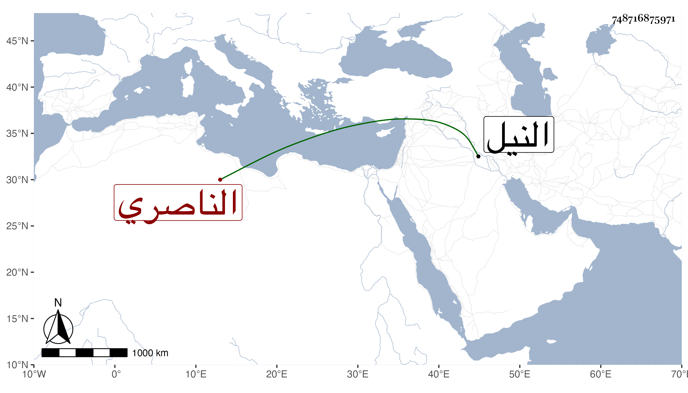

0902Sakhawi.DawLamic.ITO20230111-ara1.EIS1600.748716875971
Biography ID: 748716875971
375
محمد الناصري بن الأشرف برسباي ، وأمه خوند الكبرى زوجة دقماق المحمدي المنسوب أبوه إليه . تسلطن أبوه وهو ابن خمس سنين تقريبا ثم أنعم عليه سنة تسع وعشرين بعد أمير سلاح إينال النوروزي بتقدمة واستخدم عنده عدة مماليك وجعل له أرباب وظائف من الأمر والخاصكية ورسم لهم بسلوكهم معه طريق من سلف من أبناء السلاطين في الأسمطة والخيول وغيرها فامتنلوا وصار ينزل في وفاء النيل لتخليق المقياس وفتح السد على العادة بتجمل وبين يديه أكابر الأمراء والخاصكية إلى أن مات بالطاعون في نصف جمادى الآخرة سنة ثلاث وثلاثين وقد ناهز الحلم ودفن بمدرسة أبيه وكان قد عين للسلطنة بعده فأراحه الله وماتت أمه قبله بمدرسة أبيه أيضا ، وذكره شيخنا في إنبائه باختصار .
